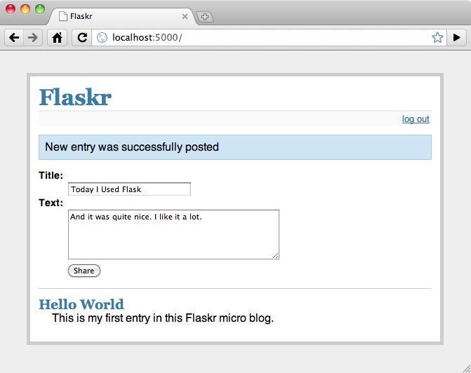

介绍 Flaskr¶
在本教程中，我们把我们的这个博客应用称为 flaskr ，也可以选一个不那 么 web 2.0 的名字 ;) 。基本上，我们希望它能做这些事情：
- 允许用户用配置文件里指定的凭证登入登出。只支持一个用户。
- 当用户登入后，可以向页面添加条目。条目标题是纯文本，正文可以是一 些 HTML 。因信任这里的用户，这部分 HTML 不做审查。
- 页面倒序显示所有条目（后来居上），并且用户登入后可以在此添加新条 目。
我们将会在应用中直接采用 SQLite3 ，因为它足以应付这种规模的应用。对 于更大型的应用，就有必要使用 SQLAlchemy ，它能更加智能地处理数据 库连接、允许你一次连接不同的关系数据库等等。如果你的数据更适合 NoSQL，你也可以考虑流行的 NoSQL 数据库，。
这里是一个应用最终效果的截图:
阅读 步骤 0: 创建文件夹 以继续。